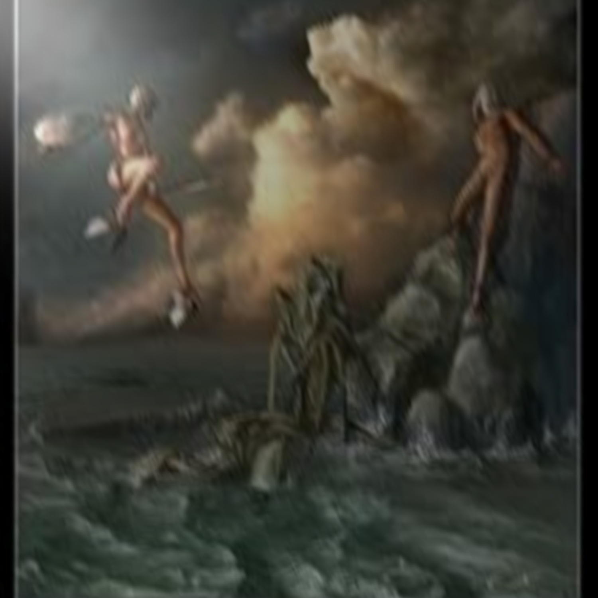
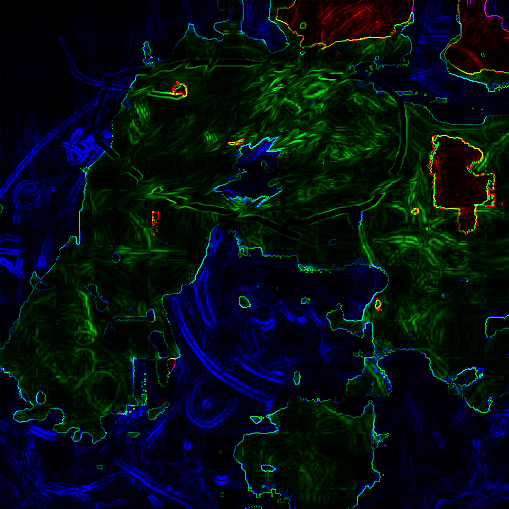
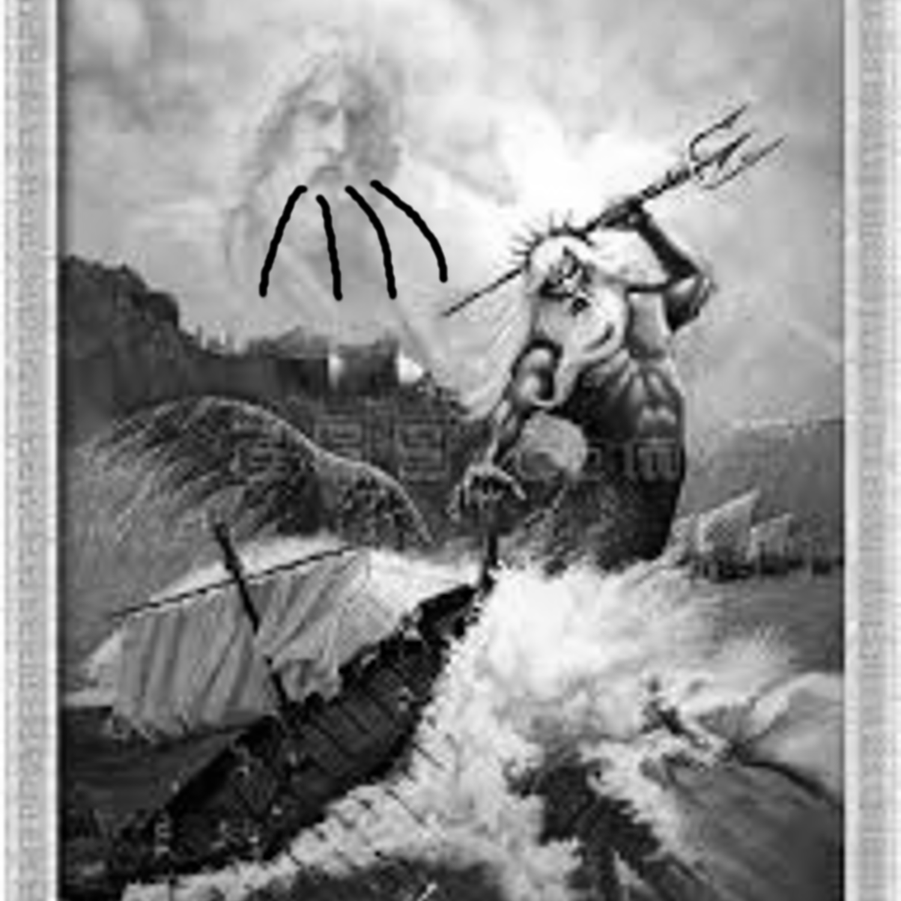
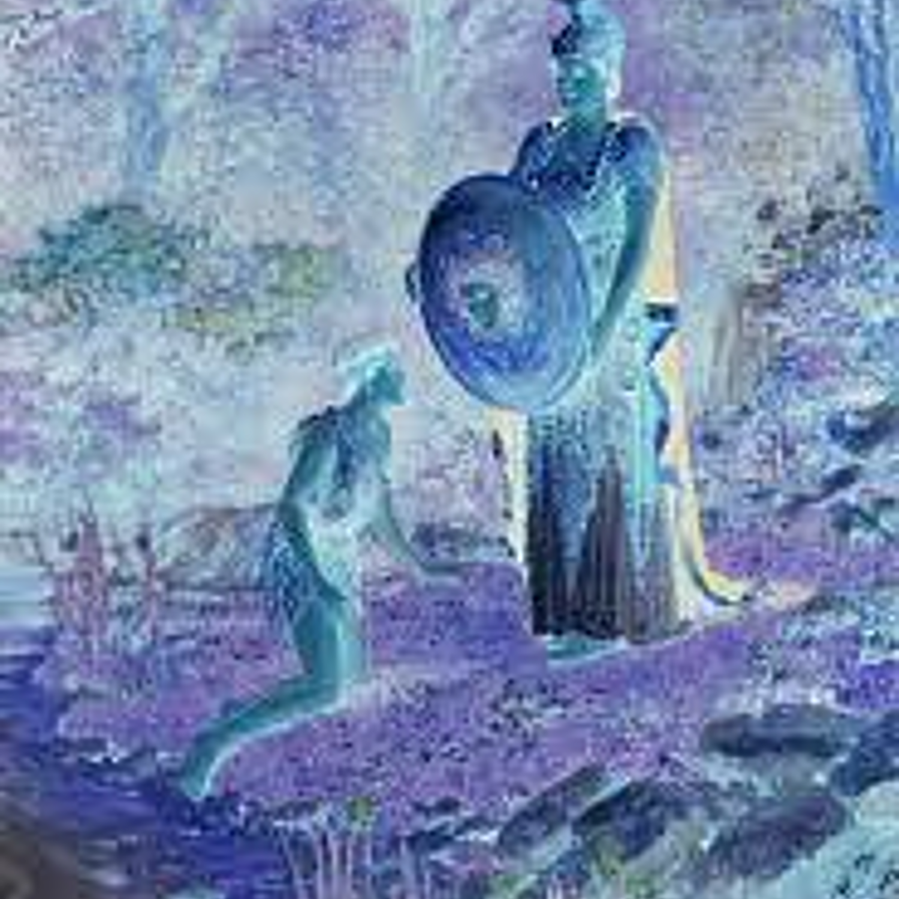
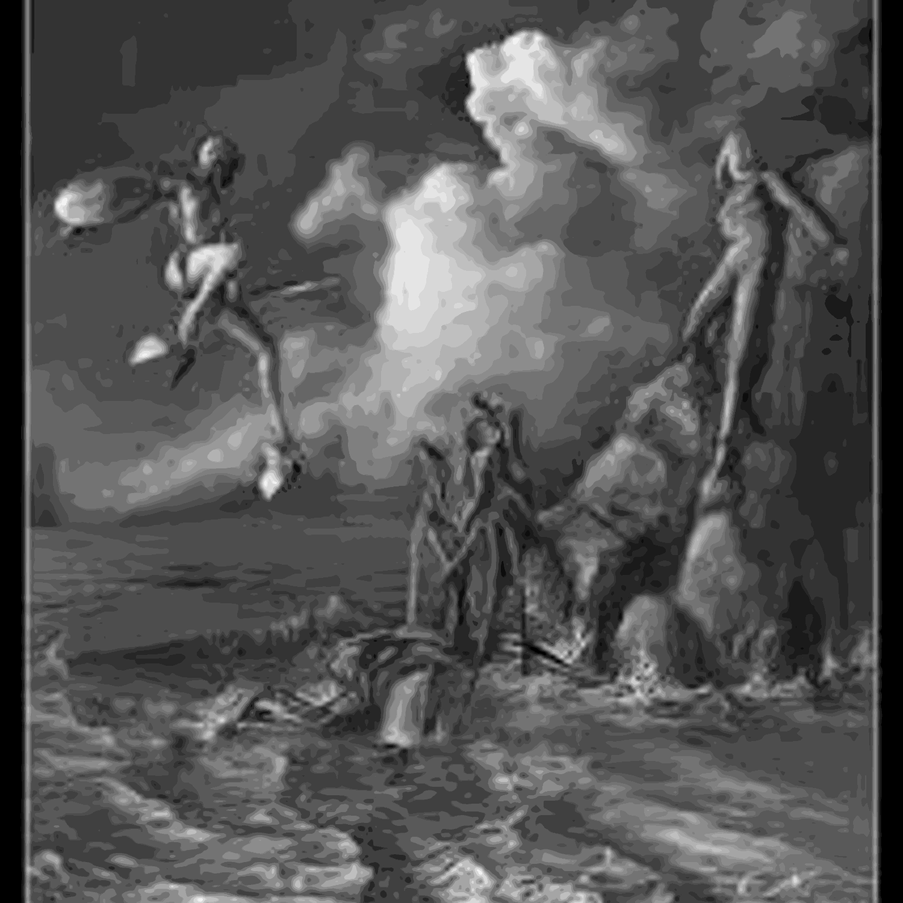
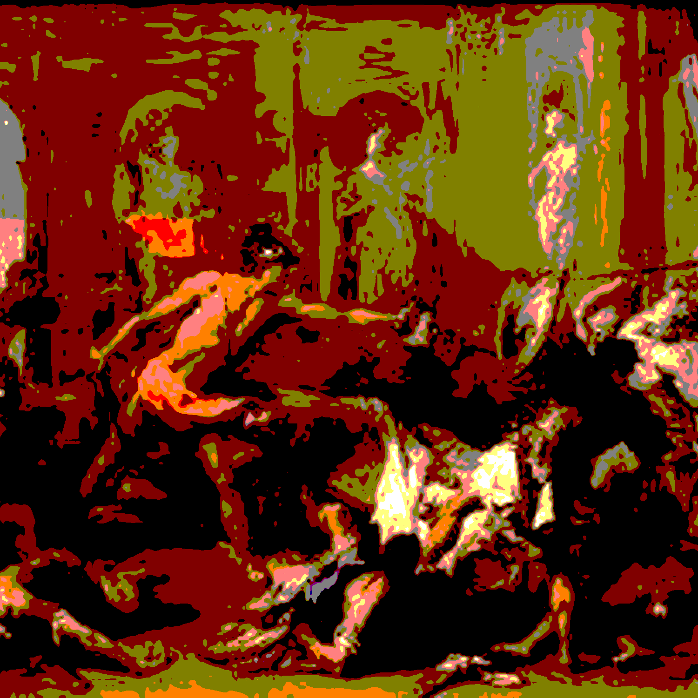
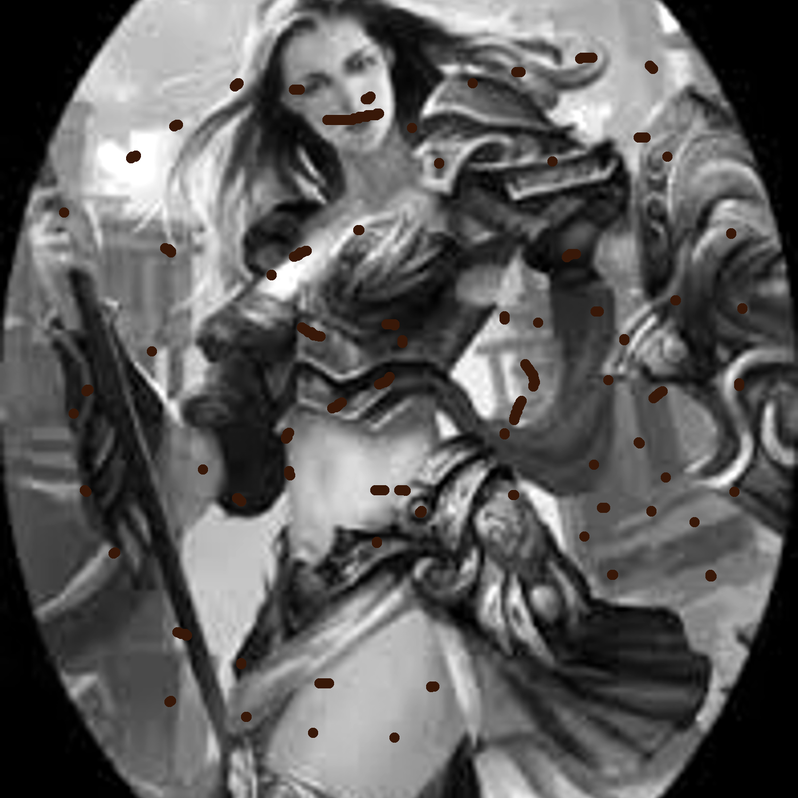
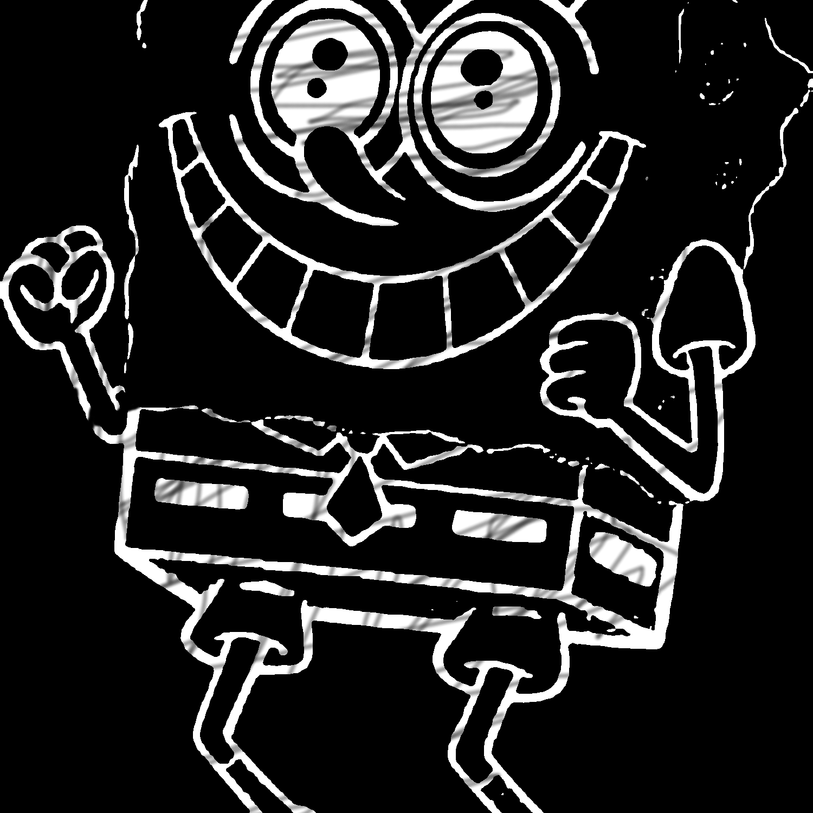
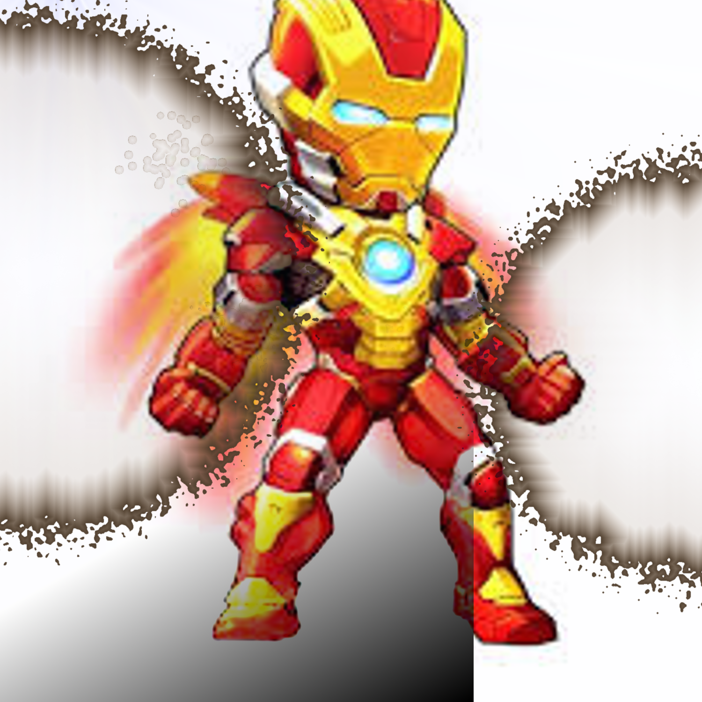

Becomes Hero
Welcome

The fitst is come from Greece that describe the god who make the world. They are Zeus and his wife. They give the world new life and make the original humans. The most imporatant is they want to give the humans Fire.

The cow who was bad guy made and because the cow wanted to damage the world. So humans wanted to resist it.

The god who control the ocean, he saw humans don't charish the resources. So the god wanted to punished humans.
The man who was Zew's son and he wanted to save people. Then Zews gave him diffciclt jobs let him fininsh.

The man who wanted to ask the most smart god for helping. Then he wanted to got the knowledges and wisdom.

The Zeus decided to believe the himans for last chance, so the picture was same as pic1. But used black and white to separate.

This is the picture of the religion. In this picture, many people to rememberd the Jesus Christ's dead.

This is the woman who was called Wonder woman she save the world and protected the humans.

He is the Spongebob who is evryone's childhood in Taiwan. He is funny and always brings the happy to every children even old people..

Finally is iron man who is the hero and protecting the world. Suchas new wonder woman and he also is good man during the world..